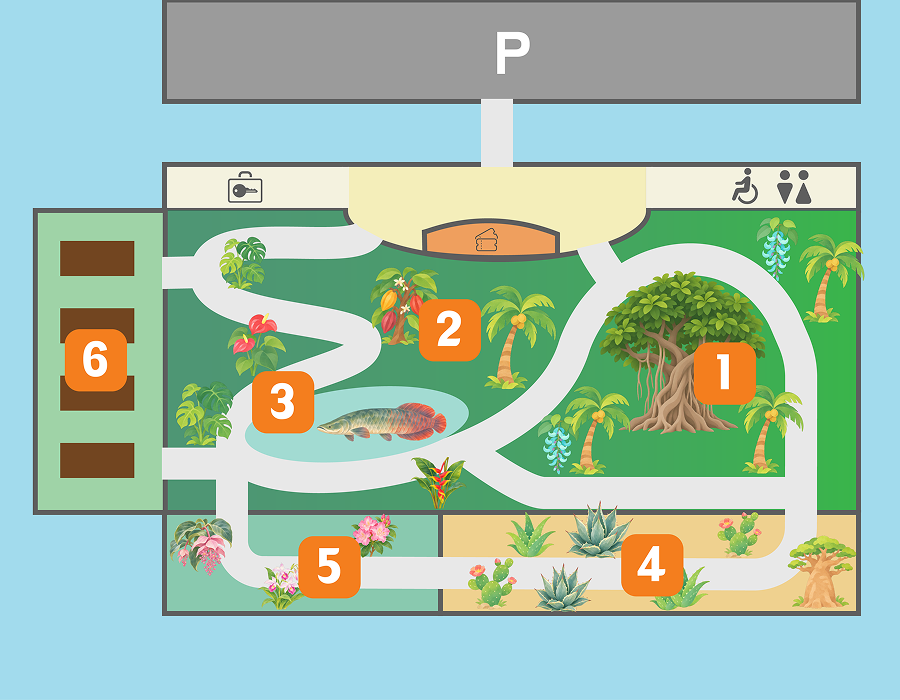
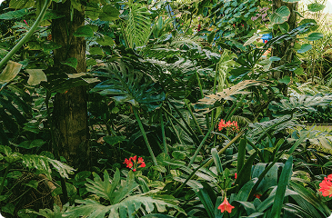
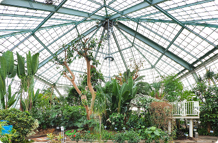
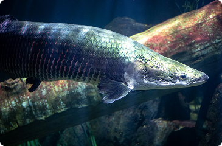
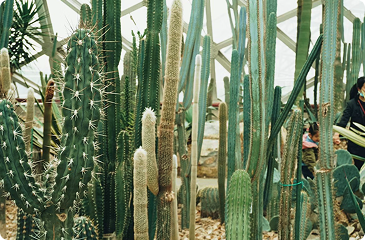
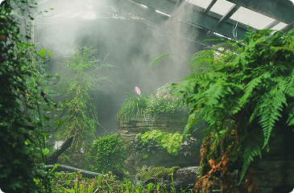

アジアの熱帯雨林

高温多湿な東南アジアの熱帯雨林を再現した、緑あふれるエリア。 巨大なガジュマルを中心に、頭上まで広がる大きな葉や色鮮やかな花々が、 ジャングルのような空間をつくり出します。
アマゾンの熱帯雨林

南米アマゾンの豊かな自然を再現した、生命力あふれるエリア。 個性的な形の葉や鮮やかな熱帯の花々が生い茂り、 水辺では巨大魚ピラルクが泳ぐ姿も観察できます。
アマゾン・リバー

南米アマゾン川流域の水辺の環境を再現した、迫力あふれる水槽エリア。 巨大魚ピラルクが悠々と泳ぐ姿を間近で観察でき、水辺に広がる熱帯植物とともに、 豊かな水中の生態系を体感できます。
乾燥地の植物たち

強い日差しと雨の少ない乾燥地帯を再現した、個性的な植物が集まるエリア。 太い幹や肉厚な葉など、厳しい環境を生き抜くために進化した 植物たちの不思議な姿を楽しめます。
雲霧林の世界

霧に包まれた熱帯の高地を再現した、幻想的なエリア。 しっとりとした空気の中、木々に着生するランやシダ、岩や幹を覆うコケなど、 湿潤な環境ならではの植物が広がります。
ボタニカルアトリエ
植物に触れながら、ものづくりや自然の不思議を楽しめる体験型エリア。 観葉植物の植え付けや、葉っぱ・木の実を使ったクラフトなど、 季節に合わせたワークショップを開催しています。 子どもから大人まで、家族みんなで楽しみながら植物への理解を深められます。